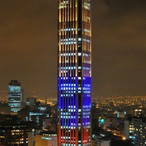
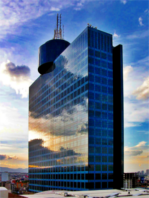

¿Quiénes Somos?
Tu mejor opción en conectividad integración movilidad capacitación mentoring
Grupo de Asesores Profesionales en Servicios de Integración (GAPSI) es una empresa de consultoría en tecnología. De orígen mexicano y con más de 10 años de experiencia en el mercado, GAPSI se especializa en integrar aplicaciones para llevar la información donde y como sea requerido para beneficio de los clientes.
¿QuiÉnes somos?
Somos una empresa que se destaca por el alto nivel de especialización de nuestros consultores y por el compromiso que tenemos para cada uno de los proyectos, que se caracterizan por concluir de manera exitosa a pesar de los obstáculos que pudieran presentarse.
Contamos con una metodología de trabajo flexible que nos permite adaptarnos a las necesidades de cada uno de nuestros clientes, permitiéndonos ser eficientes y dar la continuidad necesaria a cada uno de los proyectos.
La honestidad y el compromiso son dos valores principales para nosotros, y debido a esto son una característica visible en cada uno de los proyectos en los que participamos; los cuales son considerados como pieza importante del posicionamiento de las organizaciones con las que hemos tenido el privilegio de trabajar.
De igual manera, el respeto y profesionalismo con el cual ejecutamos nuestras actividades, han permitido consolidarnos como una empresa reconocida por sus competencias, responsabilidad social, solidez y cobertura internacional.
Nuestras oficinas
- México D.F.
-
 Monterrey
Monterrey
-  Bogotá
Nuestra Historia
-

2014
Se firman acuerdos para expandir los ofrecimientos de GAPSI a áreas de movilidad y cloud. Además, la sede central de México D.F. cambia de oficinas para ofrecer mayor comodidad a sus empleados y unas mejores instalaciones para reuniones y capacitaciones.
-

2013
GAPSI es reconocida con el premio "BEST CUSTOMER INTEGRATION AWARD" en el evento de alcance global "IBM IMPACT 2013", por una solución innovadora, flexible y replicable utilizando tecnología de IBM para el firmado digital de documentos electrónicos.
-
2012
GAPSI logra alianzas con otros socios de negocio de IBM para cubrir necesidades complementarias de los clientes. Se realizan los primeros proyectos en el exterior, en Colombia, Ecuador y Perú, y además somos reconocidos por la empresa Nexsys con el 1er. lugar en ventas de licencias de IBM Software.
-
2011
GAPSI inicia operaciones en Bogotá, Colombia con una sede física para cubrir las necesidades de clientes de diferentes ciudades de Sudámerica. Además, somos reconocidos por la empresa AVNET como "Mejor Canal IBM Websphere".
-

2010
GAPSI obtiene de parte de IBM el estatus de "Premier Business Partner" debido al alto nivel de especialización técnica y al nivel logrado de ventas. Además, somos reconocidos por la empresa Tallard con el 2o. lugar en ventas de licencias de IBM Software.
-
2008
GAPSI inicia operaciones en Monterrey, México con una sede física ubicada en las torres IOS desde donde cubre las necesidades de clientes de la zona norte del país.
-

2006
GAPSI se muda al World Trade Center de México D.F. como respuesta al crecimiento y consolidación de la empresa.
-
2005
GAPSI inicia operaciones como una empresa de consultoría de servicios especializada en las herramientas de integración de IBM.